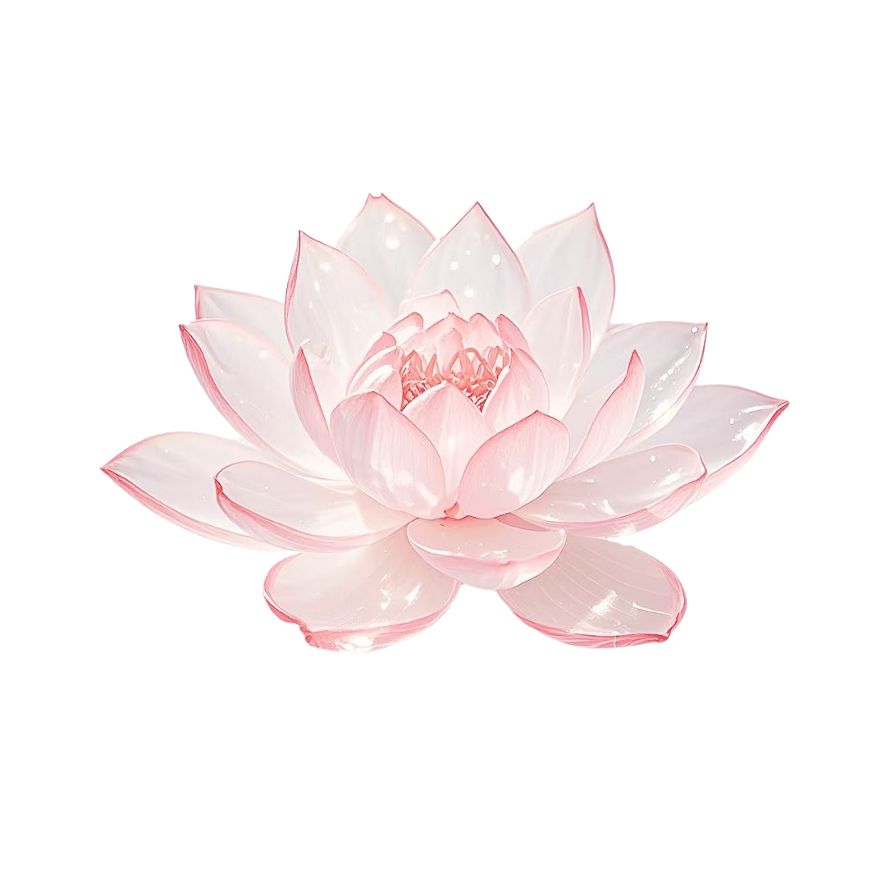

Hi, I'm Bella
MOODY COLLEGE · UT AUSTIN
I research how AI and technology shape human behavior in health and education.
MOODY COLLEGE · UT AUSTIN
I research how AI and technology shape human behavior in health and education.
MA Advertising (Thesis Track)
Moody College of Communication · UT Austin
Experience
Where I've Worked
Research, Design & Strategy
3 roles · Health comm + Ed-tech
Coursework
Where I've Studied
MA Advertising (Thesis Track)
Moody College · UT Austin
The Orchard
What I'm Writing
Blog & Research Journal
Ideas in progress
Research Specimen · UT Austin
In simpler terms: I study why health messages work for some people but not others — and how to fix that.
 The Orchardblog & journal
The Orchardblog & journalResearch Identity
Catching Points of Tension
Communication patterns — especially self-silencingKey ConstructTendency to suppress one's needs to preserve relational harmony. and help-seekingKey ConstructThe cognitive and social process of recognizing a need and initiating action. — among Korean American midlife women.
Interdisciplinary Alchemy
Mixed methodsMethodologyIntegrating qualitative depth with quantitative rigor for full-cycle research. bridging lived experience and measurable outcomes. Small cognitive shiftsYeager & WaltonBrief interventions that alter how people interpret adversity. redirect self-defeating patterns into self-enhancing ones.
What Holds Against the Tide
PhD program (Fall 2027) in health communication, developmental science, or educational psychology. Psychologically wise intervention design — evidence to implementation.
Research Questions
How can AI-driven communication systemsDefinitionApplying computational models and LLMs to understand and scale behavior-change interventions. be designed to produce behavior change that is culturally responsiveDefinitionAdapting interventions to the values, norms, and lived experiences of specific cultural groups., psychologically safeDefinitionCreating conditions where individuals can engage without threat to identity, belonging, or self-concept., and scalable across health and educationDefinitionPsychologically wise learning environments that scaffold growth mindset, reduce threat, and build belonging. contexts?
Computation
How do computational models and LLMs help identify mechanisms of persuasion and self-persuasion at scale?
Digital Mediation
How do digital tools (chatbots, mobile health apps) mediate how people receive, interpret, and act on health information?
Cultural Context
How do cultural contexts shape cognition, emotion, and action in response to framed messages?
Wise Interventions
How can psychologically wise learning environments reduce threat and build belonging in AI-supported education?
CONTINUE EXPLORING
Experience →
"Where I've actually done the work"
Field Specimens
3 roles across research, health tech, and global marketing.
UT Austin · Career & Life Design
2025–Present
Life Design cohort · Newsletter 500+ subs · Interview tools
Operationalized Stanford's Life DesignFrameworkBill Burnett & Dave Evans' design thinking approach applied to career and life planning. framework into a 12-week cohort. Newsletter (500+ subscribers), interview tools, visa guides.
Dasique · Seoul
Summer 2025
+20% intl engagement · 100+ SKU analytics · APAC
Localized Olive Young GlobalBrandKorea's leading health & beauty platform, expanding globally via CJ Group. pages (+20% intl engagement). GTMStrategyGo-To-Market — the plan for launching products into new markets and customer segments. research. 100+ SKU analytics across APACRegionAsia-Pacific — primary expansion markets including Japan, SEA, and Greater China..
UT School of Nursing
2023–2025 · 18 months
AI pain management · Mixed methods · Asian American health
AI-basedApproachMachine learning models for personalized pain assessment and adaptive intervention delivery. pain management, lifestyle interventionsMethodBehavior-change programs targeting diet, exercise, and stress management for chronic conditions., depressive symptom reduction in Asian American women.
CONTINUE EXPLORING
Coursework →
"The courses shaping my thinking"

Coursework
MA Advertising (Thesis Track) at Moody College, researching how culturally-adapted health messages change behavior.
ADV 382J
How and why messages change minds — dual-process modelsTheoryFrameworks (ELM, HSM) explaining two routes of persuasion — central (effortful) and peripheral (heuristic)., narrative persuasionConceptUsing stories to transport audiences past counter-arguing, enabling attitude and belief change., and message framingTechniquePresenting information as gains or losses to shift how people evaluate health decisions. in health communication.
Thesis Connection
How can culturally-adapted message framing reduce self-silencing in Korean American women seeking mental health support?
MKT 397 · Prof. Rex Du
Empirics-first methodology — causal inferenceMethodStatistical techniques (DiD, IV, RDD) to establish cause-and-effect from observational data., structural modelsMethodEconomic models of decision processes — modeling why consumers choose, not just what they choose., and econometric methods applied to consumer behavior.
Why This Matters
Building the quantitative rigor to design experiments that measure real intervention effects — behavioral change, not just survey responses.
EDP 382C · Dr. Patricia Chen
Growth mindsetDweckThe belief that abilities can be developed through effort, reshaping how people respond to challenge., belongingWalton & CohenBrief interventions that normalize adversity and build social connection in academic settings., stress reappraisalCrum LabReframing the stress response as enhancing rather than debilitating., and self-affirmationCohen & ShermanValues-affirmation exercises that buffer identity threat and reduce achievement gaps. as scalable intervention levers.
Thesis Connection
Can a psychologically wise intervention reframe help-seeking from weakness to strength in cultures that emphasize relational harmony?
Each course is a different lens on the same question: how do we design interventions that work with people's psychology — not against it?
Bella Kang · Spring 2026
MA · IN PROGRESS
Moody College of Communication · 2025–2027
Health communication, behavioral science, intervention design.
Semester 2 of 4Spring 2026
BS · COMPLETED
UT Austin · Graduated 2025
Fall 2022 – Fall 2025 (7 consecutive semesters)
CONTINUE EXPLORING
The Orchard →
"Where I write about what I'm learning"
Blog & Journal
Where I write about research, practice, and everything between.
Recent Writing
View all posts →Currently Reading

Core Awareness
Liz Koch
Currently Practicing
Reformer Pilates
3x per week
Currently Exploring
Stress Reappraisal
Crum Lab research
Deep Dives — Practice Journal
Weekly Practice · Mind-Body Connection
A weekly ritual of slow reading and deep conversation. We explore the mind-body connectionPhilosophyThe principle that mental states and physical states are deeply intertwined — thought shapes tissue, and tissue shapes thought. through carefully chosen texts — reading not just for knowledge, but for transformation. Each book becomes a lens through which to see our own embodied experienceConceptKnowledge gained through bodily sensation and movement, not just abstract reasoning. differently.
Reading Shelf
Core Awareness
Liz Koch
CURRENT
The Body Keeps the Score
Bessel van der Kolk
Mindset
Carol Dweck
Weekly reading directly informs thesis work on embodied cognition and stress responses. Koch's somatic approach to the psoas connects to Crum's research on how bodily awareness shapes stress mindsets — lived experience as data.
Certified Instructor · Embodied Practice

Movement is not just exercise — it is a research method. Teaching Pilates has given me a unique vantage point: I witness how physical awareness transforms mental patterns. Every client who discovers their breath can regulate their nervous systemBiologyThe autonomic nervous system — sympathetic (fight-or-flight) and parasympathetic (rest-and-digest) branches that Pilates breath work directly modulates. is a small experiment in psychologically wiseYeager & Walton 2020Interventions that are brief, precise, and work with — not against — people's existing psychological processes. embodiment.
Lateral breathing patterns that activate the parasympathetic system
Neutral spine, pelvic floor engagement — physical metaphors for psychological balance
Sensing where your body is in space — the foundation of interoceptive awareness
Controlled movement as a gateway to mindful presence and cognitive reset
Alia Crum's research shows that beliefs about stress shape physiological outcomes. In the studio, I see this in real time: when clients shift from "exercise is punishment" to "movement is care," their bodies respond differently. This is the micro-level version of the intervention design I study.
Philosophy · Where It All Converges
 CORE BELIEF
CORE BELIEF
This is the thread that ties everything together. NeuroplasticityNeuroscienceThe brain's ability to reorganize itself by forming new neural connections throughout life — the biological basis of learning and adaptation. meets embodied cognitionVarela et al.The theory that cognitive processes are shaped by the body's interactions with its environment — thinking is not disembodied.. The body is not separate from the mind; it is the mind's first laboratory. Every intervention I design acknowledges that beliefs are not just cognitive — they are felt in the body.
HOW THE THREADS CONNECT
Reading builds theoretical vocabulary for embodied experience
Pilates provides the physical practice ground for those theories
Research formalizes lived insight into scalable intervention design
Intellectual Roots
Adaptive systems reshape neural pathways and health outcomes. The body-mind loop is not a metaphor — it is a mechanism. My research asks: if we can change how people feel about stress in their bodies, can we change how they respond to health challenges in their lives?
The orchard grows slowly. Each practice — reading, movement, reflection — is a season of tending. The fruit is not knowledge alone, but the kind of understanding that lives in the body and shows up in how we care for ourselves and others.
-- Personal journal, January 2026
FULL CIRCLE
← Back to Cabinet
"Where it all begins"